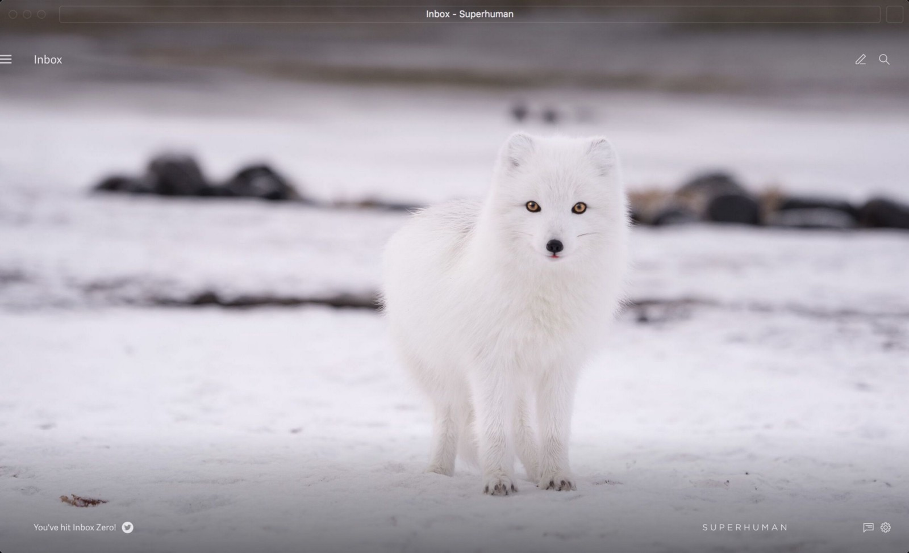
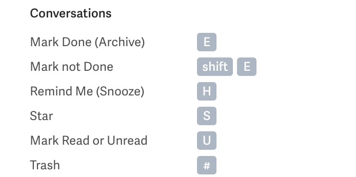
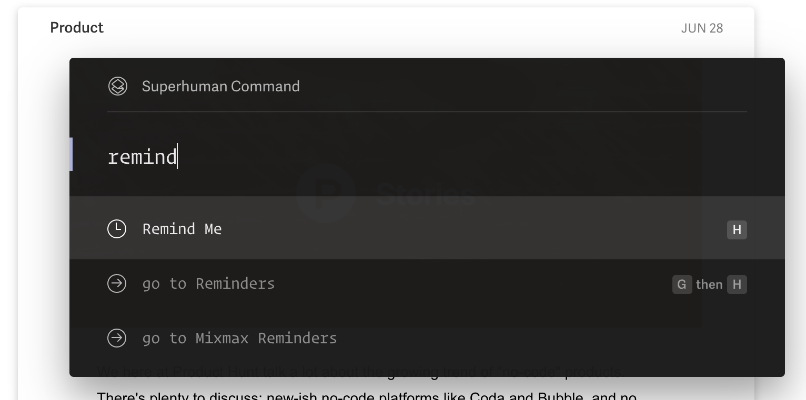
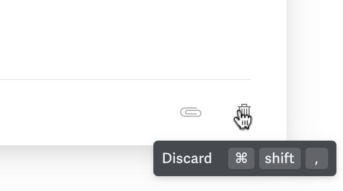
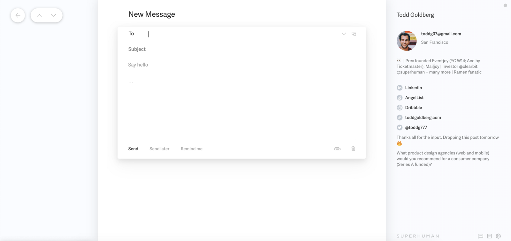

Superhuman has figured out how to turn email, a free service, into a premium experience that thousands of people pay $30 a month for, with another 180,000 people on a waitlist. Last week, they announced a $33 million Series B from a16z.
The team at Superhuman is clearly doing something right as users publicly share their love for the product. Personally, I haven't seen this much organic evangelism for a tech product since the early days of Slack.
They've inspired a new wave of productivity startups, as well as their own startup analogy - "Superhuman of X" companies. In a16z's announcement post, David Ulevitch says:
"We are now at the start of a new wave: the prosumerization of the enterprise. It does not matter whether I was CEO, corporate executive, or general partner - my needs as a prosumer have been ignored for years. And yet there are tens of millions of power users just like me. Now, a new category of prosumer tools can give these users superpowers."
This post explores the different elements of the Superhuman experience and how they can be used to build new productivity products.
Breaking down the product experience
Superhuman knows the audience they're building for. It's for people who send, receive, and triage a high volume of email each day. These are people that rely on email, but also dread it as a task each and every day.
Superhuman's product experience is opinionated. It wants you to get to inbox zero each day. How you get there is guided by features and a minimal UI that helps you work through your inbox quickly and efficiently.
Getting to inbox zero is a zen-inducing moment
Speed is everything
Everything in their product is designed with speed in mind -- search, navigating emails, keyboard shortcuts, workflows, etc. The team takes speed so seriously that they strive to have all actions take place in under 100ms -- the speed at which things feel "instantaneous."
Use case specific workflows
Table stakes for an email client is supporting the most basics tasks like sending and receiving emails. Superhuman goes many layers deeper by providing features and workflows that make their target audience more productive: reminders, reusable snippets, 1-click BCC on intros, enriched contact details, and even offline support.
Keyboard shortcuts make it all accessible
The whole Superhuman experience is accessible through keyboard shortcuts. Literally, everything has a keyboard shortcut. These shortcuts help you fly through your inbox.
User education that's subtle and effective
With so many keyboard shortcuts available, it can be easy to forget the keyboard shortcut for the action you want to take. Superhuman solves this in two ways. The first is what they call Superhuman Command, a popup that can be invoked by pressing Cmd + K. Here you can access any action and see its corresponding keyboard shortcut.
The second is that the product does an excellent job in helping you build the muscle memory for each shortcut by showing you a hint each time you do a task without it.
Minimal, lightweight design
Designing an interface with only the necessary, core functionality removes bloat and helps keep the user focused on what's important. Hiding less important information and making extra features available only through keyboard shortcuts helps Superhuman keep you focused on generating momentum to get through your inbox.
The sum is greater than the parts
Superhuman's product experience boils down to five components: Speed + use case specific workflows + keyboard shortcuts + subtle user education + minimalist design.
A common critique of Superhuman is that you could replicate much of its functionality and keyboard shortcuts through free plug-ins for Gmail. While that's partially true today, Superhuman is a productivity machine because it's the culmination of hundreds of design decisions, engineering optimizations, and the right mix of features that, in aggregate, create an unrivaled experience.
In a Wired article, Rahul Vohra, founder of Superhuman, cites that the product is engineered to get you into a "flow state."
"…because for Superhuman's intended user, email isn't a thing you do while you work. Email is work. Vohra talks often about "flow state," the elusive psychological phenomenon of complete immersion in a task, and explains how email should be optimized for flow. He says the app is full of small, helpful tricks to make things faster"
"Superhuman of X" startups
I expect that we'll see many more productivity startups being created, and that many of them will position themselves as the "Superhuman of X." These products will be:
- Designed for speed.
- Built as an opinionated product experience for a specific use case and/or target audience.
- Driven primarily by keyboard shortcuts.
- Beautiful and thoughtfully designed.
- Optional: Built as a modern alternative to a product that has legacy distribution effects (i.e. Superhuman for Gmail; Linear for JIRA; Command E for Spotlight search).
- Optional: Positioned as a premium product vs. free alternatives.
While the Superhuman team also does things differently through live concierge onboarding and marketing/hype which has helped fuel their growth, these aren't product characteristics. They also aren't an ideal fit for every type of customer (i.e. developers would rather get started via self-serve than having to do an onboarding call).
If you're thinking about building a "Superhuman for X" startup, here are some things to consider when evaluating potential ideas:
- Are there existing widely used general workflow products that are either too heavyweight or not efficient for specific use cases?
- How much does speed matter for this workflow?
- How frequently is this workflow performed?
- How many hours per day goes into this workflow?
- What new workflows can be created for this use case through a new product?
- What's the willingness of this market to pay for a premium alternative (if the market is mostly comprised of free options)?
- Given a potential niche market, what larger opportunity could this product be an initial wedge for?
I'm a passionate user of Superhuman, as well as an investor. If you're building the "Superhuman of X," I'd love to chat!